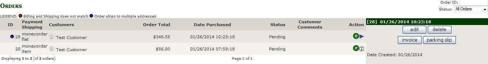
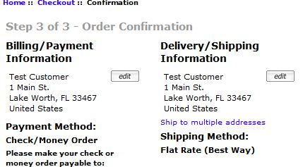
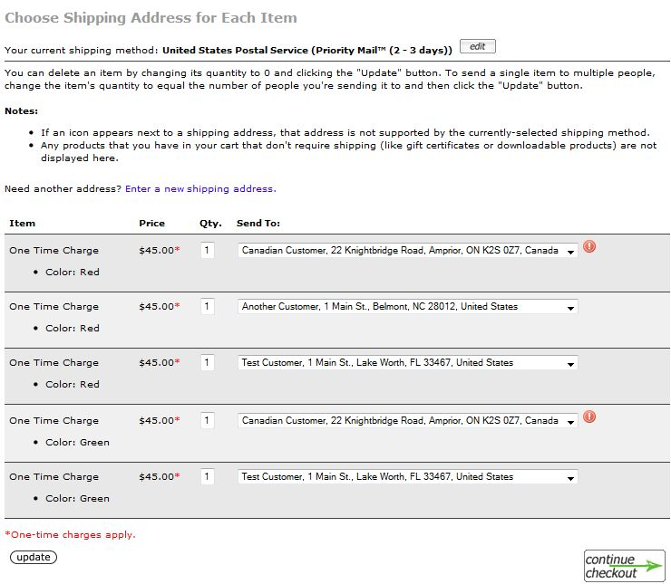

Multiple Ship-To Addresses for Zen Cart v1.5.1 to v1.5.5 — Version 1.1.3
- Introduction
- Overview
- Zen Cart Admin Interfaces
- Zen Cart Customer Interfaces
- Install and Un-install Instructions
- Version and Change History
Introduction
Credits
Copyright © 2014-2015, Vinos de Frutas Tropicales (lat9). Current Support Thread at Zen Cart Forums: http://www.zen-cart.com/showthread.php?211914-Multiple-Ship-To-Addresses-Support-Thread
Usage Notes
- Because this plugin makes modifications to the Zen Cart order process, it is not directly compatible with other plugins that also make order-related modifications including (but not limited to):
- Checkout Without Account (COWOA)
- Edit Orders
- Fast and Easy Checkout
- Super Orders
- Ty Package Tracker
If you have a question about another plugin's compatibility, please ask on this plugin's support thread (see above).
Overview
This plugin enables your store to offer your customers multiple shipping addresses on a single order, so long as the currently-selected payment method supports shipping to multiple addresses! Many payment modules will not provide a store-owner with seller protection if a customer's products are shipped to an unvetted address.
For the initial release of the plugin, only the moneyorder payment method has been updated to provide this support. The intent with this plugin's release is to provide a basic framework that can be tested (and otherwise improved) by the Zen Cart community and within which other, more intricate, payment methods can also support multiple ship-to addresses.
Every effort has been made to reduce the core-file changes required. Where possible, the change has been limited to the insertion of one or more Zen Cart notifiers at significant points. When it was not possible, the changes are spanned by comments indicating the beginning (
//-bof-multiship) and end (//-eof-multiship) of the code-fragments. In all cases, Zen Cart v1.5.5 provides the code-basis for any core- or template-file changes.Zen Cart Admin Interfaces
The first time an admin signs into (or refreshes the screen of) your Zen Cart admin after you have installed the files for Multiple Ship-to Addresses, an initialization script runs that creates new tables in your Zen Cart database:
- orders_multiship. This table holds the information that identifies the delivery address for a multiship sub-order.
- orders_multiship_totals. This table holds the order total's values associated with a multiship sub-order.
and modifies your orders_products table to add a field to provide the correlation to the multiship order id for each product. Entries are created in the
admin_pagestable to support the use of theinvoice_multishipandpackingslip_multishippages.Customers->Orders
Identifying Orders With Multiple Shipping Addresses
When you view the orders for your Zen Cart, the orders' listing display identifies those orders that have multiple ship-to addresses using a blue dot, as shown by the following screenshot:
If you click either the invoice or packing slip buttons, the page's navigation takes you to different admin pages depending on whether or not the order has been shipped to multiple addresses —
invoice_multiship.phpandpackingslip_multiship.phporinvoice.phpandpackingslip.php, respectively. This allowed the restructuring of the invoice and packing-slip printouts without modifying (yet another) core file.Editing Orders With Multiple Shipping Addresses
When you click the edit button for an order that has multiple ship-to addresses, the information is displayed as shown by the screenshot that follows. If you click either the invoice or packing slip buttons, the page's navigation takes you to the like-named admin page that provides the multiple ship-to address formatting — as described above.
There are a couple of differences between this display and that provided for a product that ships to a single address.
- The Shipping Address: field displays Shipping to multiple addresses, see below.
- The Products and order-totals are split out for each shipped-to address.
- A Grand Total: section is inserted to identify the overall billed amounts.
- The orders-status for each sub-order and for the overall order can be separately viewed and changed.
- If a sub-order's status is changed, the change is recorded in an orders_status_history record for the order.
Invoices For Orders With Multiple Shipping Addresses
When you click the invoice button for an order that has multiple ship-to addresses, the information is displayed as shown by the screenshot that follows. There are a couple of differences between this display and that provided for a product that ships to a single address:
- The Shipping Address: field displays Shipping to multiple addresses, see below.
- The Products and order-totals are split out for each shipped-to address.
- A Grand Total: section is inserted to identify the overall billed amounts.
Packing Slips For Orders With Multiple Shipping Addresses
When you click the packing slip button for an order that has multiple ship-to addresses, the information is displayed as shown by the screenshot that follows. There are a couple of differences between this display and that provided for a product that ships to a single address:
- The information is broken out by each Ship To: address.
- A page-break is inserted between each sub-order's information, so an order that ships to two addresses will have two packing slips.

Zen Cart Customer Interfaces
This plugin modifies the interfaces presented to your customers during the checkout process and, if an order is shipped to multiple addresses, their account history display for that order.
During the Checkout Process
Initial Offer for Multiple Ship-To Addresses
When a customer's current order qualifies for multiple ship-to addresses, a new link, as shown by the screenshot to the left, is displayed on your store's Checkout Confirmation page. If the customer clicks that link, they're taken to the Choose Multiple Shipping Addresses (checkout_multiship) page. An order qualifies for multiple ship-to addresses if:
- The payment method that the customer chose supports multiple ship-to addresses and that payment method is enabled to provide such support.
- There is more than one physical item present in the customer's cart. Note that any item that is mixed, e.g. a physical product with a download included, does not qualify for the multiple ship-to addresses!
- The customer is not using a guest checkout (either COWOA or PayPal Express Checkout).
Choose Multiple Shipping Addresses
The
checkout_multishippage is presented to the customer when they click the Ship to multiple addresses? link presented in thecheckout_confirmationpage. This page's processing breaks down the customer's order into a collection of single-quantity line items so that the customer can choose the ship-to address for each item in their cart.Note: The processing for this page automatically disables the left and right sidebox display, to provide sufficient display width for the dropdown address menus.
This page operates as follows:
- Initially, all items ship to the customer's current delivery address (as selected on the
checkout_shippingpage). - The customer can change the currently-selected shipping method by clicking the "Edit" button at the top of the page.
- The customer uses the dropdown list of addresses — created from their current address book — to choose the address to which each individual item is to ship.
- An item (and its associated ship-to information) is removed by setting its quantity box to 0 and clicking the Update button.
- The quantity of an item currently in the cart can be increased by changing one of the item's quantity boxes to a value greater than one (1) and clicking the "Update" button. For example, changing the quantity of one of the items to 2 will increase the quantity of that item by one (1).
- Clicking the "Enter a new shipping address" link will take the customer to their address book, where they can create a new address if needed.
- No virtual or mixed products in the customer's cart are listed on this page, since a virtual product has no ship-to address. All virtual products in a "mixed" cart (i.e. having a combination of physical and virtual products) will be associated with either the customer's default address (if one or more physical items is being shipped to that address) or the the address that has the lowest
address_id. If the customer chooses to send all items to a single address, then all virtual products are also "sent" to that address. - Once the customer has chosen the send-to addresses for each item in their cart, they click the Continue Checkout button to return to the Checkout Confirmation page. If any address chosen is not compatible with the currently-selected shipping method, the customer will be returned to the
checkout_multishippage to correct the problem (as displayed by the screenshot to the left).
Confirming Multiple Ship-To Addresses

Once the customer has chosen multiple ship-to addresses, the display of the Checkout Confirmation page changes to show the customer the order's breakdown by address.
This page operates as follows:
- Clicking the "Edit" button associated with the Delivery/Shipping Information returns the customer to the
checkout_multishippage. - The Shopping Cart Contents section is broken down by ship-to address.
- The Grand Total, the total amount charged for the order, is displayed at the bottom of the page.
- Clicking the "Confirm the Order" button will result in the order being processed.
Account — Reviewing Order History
When a customer has placed an order with Multiple Ship-To Addresses, that order's display within the customer's account-related pages changes to reflect the multiple addresses:
- On the main My Account page, the Ship To column of the Previous Orders table shows "Multiple Addresses".
- On the My Account :: History page, the Shipped To field shows "Multiple Addresses".
- On the Order Information page, the Delivery Address shows "Multiple Addresses" and the order's details are broken out by ship-to address (using a layout similar to that described in Confirming Multiple Ship-To Addresses).
Install and Un-install Instructions
Installation
There are core-file overwrites in this plugin; you should always backup your cart's database and files prior to making any changes. Unzip the plugin's package file and then:
- Rename the YOUR_ADMIN folder to match the name of your Zen Cart's admin folder.
- Rename the YOUR_TEMPLATE folders (3 of them) to match the name of your Zen Cart's custom template:
- /includes/languages/english/YOUR_TEMPLATE
- /includes/languages/english/extra_definitions/YOUR_TEMPLATE
- /includes/templates/YOUR_TEMPLATE
- Sign into your Zen Cart's admin panel.
- Click on Modules->Payment. If the Check/Money Order payment method is enabled, note its current settings and then Remove that payment method. This plugin provides an update to this payment method to identify that it supports multiple ship-to addresses, so it will need to be configured once the files have been copied to your installation!
- For each of the core or template-override files distributed by this plugin, merge the plugin's file with any other changes you've made and then copy that file to your store's folder structure:
- /includes/classes/class.base.php. This is the Zen Cart v1.5.5 version of the file.
- /includes/classes/order.php. This is the Zen Cart v1.5.5 version of the file, with a couple of notifiers added.
- /includes/classes/shopping_cart.php. This is the Zen Cart v1.5.5 version of the file.
- /includes/modules/payment/moneyorder.php. This modification allows the payment method to identify that it supports multiple ship-to addresses.
- /YOUR_ADMIN/orders.php. Changes here support the modified order-display described in this section of this readme.
- /YOUR_ADMIN/includes/classes/order.php. A notifier is added so that the multiple ship-to address fields are added to the order's data array.
- /YOUR_ADMIN/includes/functions/general.php. This is the Zen Cart v1.5.5 version of the file.
- Template override files:
- /includes/templates/YOUR_TEMPLATE/templates/tpl_address_book_default.php
- /includes/templates/YOUR_TEMPLATE/templates/tpl_checkout_confirmation_default.php
- Copy the new files, introduced by this plugin, to your store's folder structure:
- /includes/auto_loaders/config.multiship.php
- /includes/classes/class.multiship.php
- /includes/classes/observers/class.multiship_observer.php
- /includes/extra_datafiles/multiship_file_database_names.php
- /includes/languages/english/extra_definitions/YOUR_TEMPLATE/multiship_common.php
- /includes/languages/english/YOUR_TEMPLATE/checkout_multiship.php
- /includes/modules/pages/account/header_php_account_multiship.php
- /includes/modules/pages/account_history/header_php_account_history_multiship.php
- /includes/modules/pages/account_history_info/header_php_account_history_info_multiship.php
- /includes/modules/pages/account_history_info/main_template_vars.php
- /includes/modules/pages/checkout_confirmation/header_php_checkout_confirmation_multiship.php
- /includes/modules/pages/checkout_multiship/header_php.php
- /includes/modules/pages/checkout_multiship/jscript_goodbye.php
- /includes/modules/payment/moneyorder.php
- /includes/templates/YOUR_TEMPLATE/css/account_history_info.css
- /includes/templates/YOUR_TEMPLATE/css/checkout_confirmation.css
- /includes/templates/YOUR_TEMPLATE/css/checkout_multiship.css
- /includes/templates/YOUR_TEMPLATE/images/icons/multiship_noship.png
- /includes/templates/YOUR_TEMPLATE/templates/tpl_account_history_info_multiship.php
- /includes/templates/YOUR_TEMPLATE/templates/tpl_checkout_multiship_default.php
- /includes/templates/YOUR_TEMPLATE/templates/tpl_modules_multiship.php
- /YOUR_ADMIN/invoice_multiship.php
- /YOUR_ADMIN/packingslip_multiship.php
- /YOUR_ADMIN/images/icon_status_blue.gif
- /YOUR_ADMIN/includes/auto_loaders/config.multiship_admin.php
- /YOUR_ADMIN/includes/auto_loaders/config.zc154_compatibility.php (new in v1.1.2)
- /YOUR_ADMIN/includes/classes/observers/class.multiship_admin_observer.php
- /YOUR_ADMIN/includes/classes/observers/index.html
- /YOUR_ADMIN/includes/extra_datafiles/multiship_admin_database_names.php
- /YOUR_ADMIN/includes/init_includes/init_multiship.php
- /YOUR_ADMIN/includes/init_includes/init_zc154_compatibility.php (new in v1.1.2)
- /YOUR_ADMIN/includes/languages/english/extra_definitions/multiship_names.php
- /YOUR_ADMIN/includes/languages/english/invoice_multiship.php
- /YOUR_ADMIN/includes/languages/english/orders_multiship.php
- /YOUR_ADMIN/includes/languages/english/packingslip_multiship.php
- Click the "Admin Home" link in your Zen Cart's top admin menu. This action will cause the plugin's installation script to run.
- Click Modules->Payment and install the (updated) "Check/Money Order" payment method to enable the multiple ship-to addresses.
Note: All changes to core and template-override files are notated with the characters multiship to make the changes easy to locate!
Uninstall
First, delete the files that were copied to your zen-cart installation's folders (restoring the prior contents of the core and template-override files) then use your admin's Tools->Run SQL Patches to run the file uninstall_multiship.sql that ships with this plugin.
Version and Change History
Version History
- v1.0.0 BETA 1, 2014-01-28, Initial release.
- v1.0.0 BETA 2, 2014-02-01:
- Incorporated handling of virtual products in the customer's order.
- v1.0.0 BETA3, 2014-02-10:
- BUGFIX: Introduced in BETA2, stray entry in checkout_confirmation page when multiple ship-to addresses are selected.
- BUGFIX: Unneeded/unwanted code in checkout_multiship header causing PHP warnings.
- BUGFIX: HTML emails for multiple ship-to address orders missing quantity and model number.
- BUGFIX: Need to display shopping_cart messages on the checkout_multiship page, just in case the quantity was reduced based on stock.
- BUGFIX: Changes in quantity on checkout_multiship without intervening update click are lost if the continue checkout button is pressed.
- BUGFIX: Customer redirected to checkout_shipping if quantities were changed on the checkout_multiship page.
- Add observers for shopping cart updates and removals.
- v1.0.0, 2014-02-18
- BUGFIX: Email issues. The grand-total was not properly formatted for TEXT emails and the HTML emails required major rework.
- BUGFIX: Variable misspelling in /YOUR_ADMIN/orders.php.
- BUGFIX: Customers->Orders shows a tax percentage value even though no tax was collected for the sub-order.
- Support multiple order-status values: one for the overall order and one per multiple ship-to sub-order.
- Admin invoice and packingslip pages require change for orders with multiple ship-to addresses.
- v1.1.0, 2014-07-13
- Incorporate downwardly-compatible changes introduced by Zen Cart v1.5.3.
- Updated this readme to indicate that the "Check/Money Order" plugin, supplied by this plugin, needs to be enabled to support the multiple ship-to addresses in your store's processing.
- v1.1.1, 2014-08-16
- BUGFIX: Unwanted redirect back to checkout_shipping page after changing quantities on checkout_multiship page.
- BUGFIX: Whitescreen if UPS (or FedEx?) shipping methods selected.
- BUGFIX: Attribute values lost when cloning products with checkbox, TEXT or file-upload attributes on the checkout_multiship and checkout_confirmation pages.
- v1.1.2 2014-12-20
- CHANGE: Incorporate downwardly-compatible changes introduced in Zen Cart v1.5.4.
- v1.1.3 2015-12-31
- CHANGE: PHP 7 compatibility; update class constructor function names to __construct.
- CHANGE: Use trigger_error instead of error_log to log interface errors.
- CHANGE: Use Zen Cart v1.5.5 as the change-basis for the core- and template-file changes.
File/Database Changes by Version
Legend for the File Changes: Changed — Added — Removed
Version Files Changed/Added Database Changes v1.0.0 BETA2 - /includes/classes/class.multiship.php
- /includes/languages/english/YOUR_TEMPLATE/checkout_multiship.php
- /includes/modules/pages/checkout_multiship/header_php.php
- /includes/templates/YOUR_TEMPLATE/css/checkout_multiship.css
- /includes/templates/YOUR_TEMPLATE/templates/tpl_checkout_multiship_default.php
— v1.0.0 BETA3 - /includes/auto_loaders/config.multiship.php
- /includes/classes/class.multiship.php
- /includes/classes/shopping_cart.php (Added)
- /includes/classes/observers/class.multiship_observer.php
- /includes/languages/english/extra_definitions/YOUR_TEMPLATE/multiship_common.php
- /includes/languages/english/YOUR_TEMPLATE/checkout_multiship.php
- /includes/modules/pages/checkout_multiship/header_php.php
- /includes/modules/pages/checkout_multiship/jscript_goodbye.php
- /includes/templates/YOUR_TEMPLATE/templates/tpl_checkout_multiship_default.php
— v1.0.0 - /includes/classes/class.multiship.php
- /YOUR_ADMIN/invoice_multiship.php
- /YOUR_ADMIN/orders.php
- /YOUR_ADMIN/packingslip_multiship.php
- /YOUR_ADMIN/includes/extra_datafiles/multiship_admin_database_names.php
- /YOUR_ADMIN/includes/init_includes/init_multiship.php
- /YOUR_ADMIN/includes/languages/english/extra_datafiles/multiship_names.php
- /YOUR_ADMIN/includes/languages/english/invoice_multiship.php
- /YOUR_ADMIN/includes/languages/english/packingslip_multiship.php
Added admin_pages for invoice_multiship and packingslip_multiship pages. v1.1.0 - /includes/classes/class.base.php. This is the version released with Zen Cart v1.5.3.
- /includes/classes/order.php
- /includes/classes/shopping_cart.php. This is the version released with Zen Cart v1.5.3.
- /includes/modules/payment/moneyorder.php
- /YOUR_ADMIN/includes/functions/general.php
- /YOUR_ADMIN/orders.php
— v1.1.1 - /includes/classes/class.multiship.php
- /includes/classes/order.php
- /includes/classes/observers/class.multiship_observer.php
- /includes/languages/english/extra_definitions/YOUR_TEMPLATE/multiship_common.php
- /includes/modules/pages/checkout_multiship/header_php.php
- /includes/templates/YOUR_TEMPLATE/tpl_checkout_multiship_default.php
— v1.1.2 - /includes/classes/shopping_cart.php
- /YOUR_ADMIN/orders.php
- /YOUR_ADMIN/includes/auto_loaders/config.zc154_compatibility.php
- /YOUR_ADMIN/includes/init_includes/init_zc154_compatibility.php
- /YOUR_ADMIN/includes/functions/general.php
— v1.1.3 - /includes/classes/class.multiship.php
- /includes/classes/order.php
- /includes/classes/shopping_cart.php
- /includes/classes/observers/class.multiship_observer.php
- /includes/modules/payment/moneyorder.php
- /YOUR_ADMIN/orders.php
- /YOUR_ADMIN/includes/classes/order.php
- /YOUR_ADMIN/includes/classes/observers/class.multiship_admin_observer.php
- /YOUR_ADMIN/includes/functions/general.php
- /YOUR_ADMIN/includes/init_includes/init_multiship.php
—